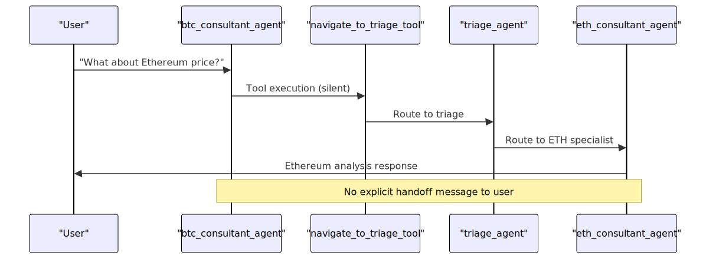

This document covers the specialized cryptocurrency consultant agents within the Signal trading system's agent swarm architecture. These agents provide expert analysis and trading consultation for specific cryptocurrencies using comprehensive technical analysis tools and AI inference capabilities.
For information about the central request routing mechanism, see Triage Agent. For details about the internal market reporting system, see Report Agent.
The cryptocurrency consultant agents form the specialized analysis layer of the agent swarm system. Each agent focuses on a specific cryptocurrency and provides expert consultation by leveraging an extensive toolkit of technical analysis functions, social media monitoring, and real-time market data.

All cryptocurrency consultant agents follow a standardized configuration pattern with consistent completion settings and behavioral constraints.
| Configuration Aspect | Value | Purpose |
|---|---|---|
| Completion Method | runner_stream_completion |
Streaming AI response generation |
| Language Requirement | Russian (Всегда пиши ответ на русском языке) |
Localized user interface |
| Reasoning Level | High | Enhanced analytical capabilities |
| Communication Format | Text-only Markdown | Simplified, reliable message format |
Each agent operates under strict behavioral guidelines:

btc_consultant_agent)Main Prompt: "Ты часть роя агентов для консультации клиента по криптовалюте Bitcoin. Проконсультируй пользователя о стратегии торгов вызывая инструменты для получения дополнительной информации"
Current Price Context: 111,983.60 USD
Navigation Triggers: Routes to triage_agent when users discuss ETH, BNB, XRP, or SOL instead of BTC.
eth_consultant_agent)Main Prompt: "Ты часть роя агентов для консультации клиента по криптовалюте Ethereum. Проконсультируй пользователя о стратегии торгов вызывая инструменты для получения дополнительной информации"
Current Price Context: 4,307.81 USD
Navigation Triggers: Routes to triage_agent when users discuss BTC, BNB, XRP, or SOL instead of ETH.
bnb_consultant_agent)Main Prompt: "Ты часть роя агентов для консультации клиента по криптовалюте Binance Coin (BNB). Проконсультируй пользователя о стратегии торгов вызывая инструменты для получения дополнительной информации"
Current Price Context: 877.69 USD
Navigation Triggers: Routes to triage_agent when users discuss BTC, ETH, XRP, or SOL instead of BNB.
sol_consultant_agent)Main Prompt: "Ты часть роя агентов для консультации клиента по криптовалюте Solana (SOL). Проконсультируй пользователя о стратегии торгов вызывая инструменты для получения дополнительной информации"
Current Price Context: 214.08 USD
Navigation Triggers: Routes to triage_agent when users discuss BTC, ETH, BNB, or XRP instead of SOL.
All consultant agents share an identical set of 19 specialized tools, each optimized for different aspects of cryptocurrency analysis.

| Tool Name | Purpose | Data Source | Key Metrics |
|---|---|---|---|
fetch_slope_data |
Minute-by-minute trend analysis | 120x 1min candles | Price slope, momentum, VWAP |
fetch_volume_data |
Volume validation and liquidity | 220h candle data | Pivot points, volume spikes, S/R levels |
fetch_whale_data |
Large player activity detection | 5min candles, 6h lookback | Whale accumulation, OBV trends |
fetch_book_data |
Real-time order book analysis | Live order book data | Bid/ask depth, liquidity walls |

Each agent provides comprehensive historical analysis across multiple timeframes and data granularities.

The navigate_to_triage_tool provides seamless agent transitions without explicit user notification.
Tool Description: "Переключиться на агента Triage для вопросов не по теме. Если ты выбрал этот инструмент, не вызывай другие. ВАЖНО! Вызывая этот инструмент не отвечай на вопрос пользователя"
Handoff Triggers:

All consultant agents implement the onToolError callback mechanism for robust error handling during tool execution. This ensures graceful degradation when technical analysis tools encounter issues such as data unavailability or API failures.